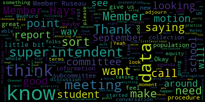
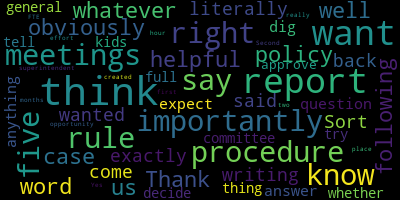

[hGxT3FthToQ_SPEAKER_02]: Hello, everyone.
[McLaughlin]: It's 5.02. We'll get started in a moment. Just want to make sure I don't see Sharon on here yet.
[hGxT3FthToQ_SPEAKER_02]: Member Hays. Give it another few minutes.
[Hays]: Can everyone hear me. Hi, thank you.
[McLaughlin]: Yep. Okay, good. Welcome, everyone to the diversity, equity and inclusion subcommittee meeting for today. Thank you. Member Hays, sorry. If you could mute, that would be great. Thank you. So it's, please, I'm just gonna read our notice and then we'll get started. So please be advised that on Tuesday, May 16, 2023, from five to six, there will be a diversity, equity, and inclusion subcommittee meeting to be held via remote participation on Zoom. The purpose of the subcommittee meeting will be to examine the new safety procedures outlined in the update to the Medford High School student handbook sent to families on January 2nd, 2023, from a DEI perspective. The meeting can be viewed through Medford Community Media on Comcast Channel 15 and Verizon Channel 45 at 5 p.m. Since the meeting will be held remotely, participants can log or call in by using the following link or call-in number. Medford Public Schools is inviting you to a scheduled Zoom meeting. is noted online and the call in number is 309-205-3325 if you need to call into the meeting. And with that, we will take roll call.
[hGxT3FthToQ_SPEAKER_02]: Have I been talking this whole time and I've been mute?
[McLaughlin]: Seriously? Oh, okay. I thought it was mute. Thank you guys. Good. So member Hays. Thank you. Member McLaughlin here. Member Ruseau.
[Ruseau]: Here.
[McLaughlin]: Great, thank you. I know that as the superintendent said that she was in route, driving back to the high school so that might be a moment or two. And we were just going to get started so I was hoping the superintendent might be able to give us a little bit of background but I do see that. Principal DeLava is on the call, so if I could ask maybe Principal DeLava if you can give us a little bit of background in terms of, you know, the changes to the student handbook and what occurred.
[D'Alleva]: Sure, so thank you. And I'm glad to be here, obviously, to answer any questions. I think not so many changes that occurred of more than things that we were focusing on regarding the handbook of reminding some students of some rules that had sort of been lapsed a little bit. There's no specific changes because that usually goes through our site council. And then our site council presents the handbook from there. So we did have our 10-point action plan that reflected pieces within the handbook that were currently stated already. And it was more of a reminder of this is what happens when you do X or when you do Y or Z. That is there. I see Mrs. Hayes has her hand up, so I will be happy to answer any questions. Thank you.
[Hays]: Yeah, I'm sorry. I couldn't find the raise hand on my thing. Sorry. I didn't mean to interrupt, but. So, the original resolution that I wrote that led to this meeting, which I think was, I think I wrote it back in February, but there were. a series of unfortunate events that kind of put this meeting off really wasn't so much about the student handbook. It was really a more open-ended. So I'm sorry, Mr. DeLeva, that was a great explanation that I just want to kind of clear up. So the original resolution was fairly open-ended and it was really came about after the new safety procedures were put in place. I had at some point pretty soon after the new procedures sent an email to administration with some questions. And then I thought, well, this seems like something more that the whole DEI subcommittee maybe should together just talk about in terms of with the new safety procedures in place, thinking about how that impacts the student experience at school. And really even more specifically, when we think about some of our specific subgroups, how some of like having another resource officer having an increased number of hallway and bathroom monitors, certainly that can have an impact on some of our students of color, thinking about the bath, having some of the bathrooms closed and some of the bathroom restrictions, just how that might impact students with disabilities, students with any anxieties about using the bathrooms, some of our LGBTQ students who might need a gender neutral bathroom. So it was more looking a somewhat open-ended kind of brainstorming session about what could be the impact on students. And from that, Are there things that the school committee might want to either get more information about from administration? Might there be data that we'd like to request, you know, put in, send up to the school committee as a whole to say, do we want to ask for a report about this, things like that. Or even, I lost my train of thought. There was a third thing I was thinking. Well, oh, policies. Are there any policies we might wanna think about that would be related to when there's a change like this for students and how we address the possible unintended consequences procedures and policies like, or it's not really policies, these are new procedures, procedures like this and how they impact students. So that was kind of the broad question. It was a very, I know it was a very broad resolution, but really was a chance for kind of, I guess, all of us together with administration to just think about these new procedures from the student perspective and in particular, some of our some of our more marginalized students and how might it impact their experience?
[D'Alleva]: So I could sort of give an overview of what I see, if that's okay. Regarding that, so like if we're talking about the bathrooms, what has been more noticeable is with our limit of how many students we're allowing in a bathroom, right, that's being monitored. We're seeing lines of students, you know, outside waiting to go to the bathroom, where typically, you know, was on, you wouldn't see these lines before. So, you know, the other part of it too is, so nobody gets in trouble, we, between classes, we close, right, so that there's a monitor in place But then you reopen so what you're seeing is a little bit more students out of class right because to access the bathroom they have to get the pass in order to to access the bathroom, which can also delay time of going back to class right because you have. No matter how many bathrooms we have open, there's still lines of students that are waiting to use the bathroom. That being said, we've had individual bathrooms open. Obviously, we don't want anybody not being able to use the bathroom. For example, we do have a gender neutral bathroom here in the main office. I'm actually pointing to it. right now from here, but that is an avenue for a student that, you know, it's a single stall. And if they're just having trouble finding a bathroom, obviously we want to try to have as many bathrooms as we possibly can have open our access to. And then downstairs by behind the theater, as well as another gender neutral bathroom that we are using, but you have to go to the security guard to get the key to, to utilize that bathroom as well. So that's, I think on a DEI perspective, obviously, you know, you don't want students missing class, but at the same time, you don't want students being uncomfortable and, and, and trying to figure out when, when can I use the bathroom? So I think that's something, something to keep in mind for this discussion, um, as well. Um, and again, we talked about the monitoring, um, I think that's sort of our trials when we're trying to keep bathrooms open too. Because the way that we had figured some of this out is teachers were also using loss of prep in order to do this. But if a teacher's out, we have to shuffle and re-scramble to figure out who's what. Or if, for instance, we need to cover classes, that takes the priority over the bathroom monitoring. Uh, that occurs as well. So, um, I'll leave it at that just as a start starting a springboard point, um, of what I've been seeing, um, throughout the time since we've implemented the, uh, the procedures.
[McLaughlin]: I guess I would add, oh, sorry. Uh, member, um, Hayes, just a moment. Um, I guess I would also add if there's any, I'd be curious if there's any sort of data collection on, on, um, you know, any student increase in, you know, either behavior referrals or requests to leave classrooms or anything like that based on any subgroup population. And these new procedures, that could always be helpful to take a look at, but member Hays.
[Hays]: Thanks. Yeah, I was going to basically ask the same question about data in terms of just the things that Mr. DeLevo just spoke about with the bathroom. And I'm just curious, again, as you said, Ms. McLaughlin, are there any data being kept? Is there a way to keep data? Maybe we can brainstorm about that in terms of, you know, how much class are kids missing? Do we have any way of finding out from students kind of what they're, how they're feeling about missing class. I know at one point, I think at a meeting, I thought a student spoke up, one of our student reps said something about having a hard time getting to an open bathroom and I don't know about students who might be anxious about missing class and how that's working out. Again, just kind of that whole idea of how can we, as a group, can we brainstorm ways to kind of figure out one, Is this a problem at all? And if it is, what can we do to alleviate some of those problems? Because these are all new procedures and works in progress.
[hGxT3FthToQ_SPEAKER_02]: Sorry, can I, can I, yeah.
[McLaughlin]: Principal DeLava please.
[D'Alleva]: Um, so one thing that has been implemented this year is the hall pass system. The all pass system if it's being utilized correctly in each class when a student is requesting to use a pass or to go to the bathroom or anything like that. It indicates a timer so we know the students where they're going. and the time it takes them to come back. There's a little bit of challenges with it that I've seen. So for example, I'm teaching a class, definitely allow the kid out, I hit the start button, right? Then all of a sudden they come back. Sometimes it happens, you're in the middle of instruction, so you forget to end the pass, right? So sometimes what happens is on E-Haul Pass, If a 30-minute time lags, it shuts down the hall pass after 30 minutes. If we're gone 10 minutes, you'd have to be constantly watching it, but I mean, if you're gone 10 minutes, for example, you start to see the pass go to yellow because the student's been out of class for 10 minutes. The point that I'm trying to make, though, is that we can get history reports of who is out and then. I don't know. I mean, we'd have to do some cross-referencing when you're talking about the type of student as well. I'm going to get the whole gamut of the whole school that is utilizing eHaulPass. So there'll have to be some cross-referencing regarding Who's got so many passes versus, you know, you know, the, whatever subgroup you're trying to identify.
[hGxT3FthToQ_SPEAKER_02]: I hope that made sense.
[Hays]: Can I jump in for a 2nd, please. I guess, so I guess maybe a good place to back up that is to ask is administration collecting data on any of the maybe that's the first step and say, are you collecting data on kind of impact both intended and unintended of the new procedures. both on students in general, but also, again, as we talk about some of these subgroups. And, you know, I think originally one of my main concerns when I wrote the resolution was thinking about with the increased adult monitoring and with, well, really just that, the increased adults who are really kind of monitoring where students are going and what they're doing. Certainly with students of color, that could have an impact both in terms of are there differences in who's being spoken to more often or getting referrals? And even beyond that, just how, has there been discussion with these students or any attempt to kind of figure out, is it affecting them from a mental health perspective? Like, are they feeling uncomfortable with this? Since we know that, you know, there's data everywhere to show that that can certainly be an issue.
[D'Alleva]: So, I mean, I can say that, you know, the way I look at things is we deal with things on case-by-case basis, in a sense, you know, things that get referred to us, there are things that come up to my level, there's things that stay at the assistant principal level, because they work closely with the families as well as The students, but that being said, you know, I tend to take a look at. We have a dashboard on school brains and I tend to look at. like a pie chart of the whole school, because to me, like the whole school is what I'm looking at, right? I agree with you, like sometimes teasing out, like I said before, teasing out certain subgroups, it's doable. It's time consuming, obviously, but it's doable. But I want to look at something that, you know, procedural wise was something that was huge that, has been diminishing through the years, which was our class cuts. Like that still becomes, you saw Mr. Welch's report as well. That is still something that has come up time and time and time and time and time again as a referral basis of us figuring it out. Now we're looking at the number of reductions of class cuts. uh, that are occurring throughout the year, because no matter what, if I run any report and I've run a couple, that's always our number one gamut. And. You know, the hard part for me, what I'm identifying more is it's a lot with our ninth graders. It seems like our upperclassmen are, are towing the line, but our ninth graders are still trying to figure out how to navigate through the building. Um, So, I don't, again, I don't think I'm answering your question completely, but I'm just trying to give the overview of what has been occurring of what we've been seeing and what we've been dealing with. But we are looking at data, we're not just dealing with it in one sense, we are looking at data as well. We meet once a week, assistant principals and I, and we go through this data. And we try to hit some things. And then assistant principals also talk to me of like, OK, this is something I've been dealing with. Let's put all four heads together, or six of us, right, Mr. Fallon included, to figure out solutions to help navigate.
[hGxT3FthToQ_SPEAKER_02]: Thank you. Thank you, Mr. Delabro. Superintendent? Yes, I just wanted to... Sorry. Give me one second. That's an echo.
[Edouard-Vincent]: I just wanted to share, based on the question that was being asked about the specific data related to are the demographics of the students being monitored. And I have said it in maybe different arenas, but as we were working on stabilizing the high school and looking at the behaviors that were happening, we were truly dealing with, if we had students cutting classes, If it was a higher number that happened to be students of color. It was, we need to get students back into the classrooms to ensure that the building in everyone was safe and in a secure space. When you were just asking about the DEI perspective, I want to just say that yes, we do look at the work through diversity, equity, and inclusion, but we also looked at how the high school was functioning and making sure that students were where they needed to be. I want to say that yes, we can look at it. Always keep that in mind, but also keep in mind that we do want students to be inside their classrooms. and not in the hallways. So I just wanted to say that that was something. As I've spoken to students in the hallway, I escorted students back to a class and they weren't doing anything. They were just sitting on a bench, talking and laughing, but they needed to be in class and their teacher was waiting for them. And their teacher was grateful that I escorted them back to the classroom. So I just wanna say that, that even if we go and we disaggregate it by that, it's really just trying to make sure that all students are where they need to be.
[hGxT3FthToQ_SPEAKER_02]: I don't know if that makes any sense, but I just wanted to say that piece. Sorry, Member Hays, I didn't see your hand up. Member Hays? Thank you.
[Hays]: So I just wanna be clear that this resolution was not questioning the need and the critical need at that moment for something to change because there were some pretty major issues at the high school. So the question is not necessarily about the intended consequences and certainly the intended consequences were to have students in class and really to help students feel safer at school. And I don't think that That's not the question of this particular subcommittee meeting or the resolution I put forward. It really is, again, looking at some of the possibly unintended consequences and how do we assess and evaluate now that we're several months out, what's the impact on students and are there any unintended impacts? Because certainly, as I said at the beginning, although I don't know, maybe you weren't here yet, superintendent but you know some of the some of the questions I brought up were questions of you know unintended some of those unintended consequences are certain students being spoken to more often in the hallways now that there's more monitors are some students feeling less comfortable actually feeling less comfortable in the building if there's more adults kind of overseeing them. Are there students who might find it difficult to access bathrooms now that they're closed and that might make them anxious or uncomfortable just, you know, thinking about students with disabilities? students with anxieties about finding a bathroom. I think Mr. Lave already spoke to the LGBTQ population, but certainly, you know, depending on where they are in the building, getting to the main office in that one bathroom could be pretty difficult. And so just trying to think through some of those And how are we giving students a voice to let us know about that and how are we looking at any data that we have or do we need to talk about how we could get more data to better understand now that we're, again, we're past the emergency phase, how do we now move on and start looking at the other impacts or potential impacts of these new procedures and moving forward Are they going to be, you know, if we, if they're going to be continued next year, maybe we need to have a better sense of how they're actually.
[hGxT3FthToQ_SPEAKER_02]: Working for the students in terms of how they're feeling about being in school.
[D'Alleva]: So member Hays, I think you bring up a very good point. One of the things that I know we had done was we had our listening sessions and we still try to do sort of a monthly check-in with certain groups. But that being said, there's a balance of people that wanna have a voice and there's an imbalance of people that, won't speak up or can't speak up for themselves, I think is what you're trying to put up. So when I see people in those listening sessions, I'm not seeing the peers that probably wouldn't speak up or think things are status quo and not say how they're really feeling. So I think one of the points that I'm trying to wrestle with my brain is of what you're saying is how do I get Those students, not, and I don't want to say typical because that's not the word I want to use but you know we have a certain population when the school where they're very articulate and very can voice lots of concerns and can speak for others, part of our student government things like that that we have. But that being said, there is a population that can't speak up for themselves. And therefore, how do we get them into the forefront? I guess I'm throwing it back to get ideas that maybe you may have that I don't have, because I do see your point regarding, I think what you were stating regarding how to know how a student's feeling as they're walking through the high school, someone that typically wouldn't speak up per se.
[hGxT3FthToQ_SPEAKER_02]: Thank you.
[Hays]: Yeah, well, actually I'm hoping that that's something we can all brainstorm together. I know that we have the, and I'm sorry, I hope it's okay, Member McLaughlin, that I jumped in. We have now given the student survey, and certainly that will hopefully provide some data. I'm not sure exactly what the, questions were and whether they'll be conducive to getting this kind of information. But, you know, I guess, looking at, are there more informal surveys we can do? Are there, I don't know, I'm hoping there's others that have other ideas of how we could get more information from the students, allow them more of an opportunity to speak. I, you know, I think that, as you said, Mr. DeLiva, that those listening sessions really are wonderful. I think they've been a great new addition. I'm hoping that maybe they'll They'll get, sorry about that, they'll get more formalized. Sorry, now I totally lost my train of thought. But oh, but I agree with you that I think there are students, even if it's a, I don't know what those listening sessions exactly look like, even a small listening session, there are certainly students who might feel comfortable speaking up. And so how do we make sure we get all of those students make sure they all have an opportunity to let us know what the impact is on them.
[D'Alleva]: There is another indirect survey that occurs, believe it or not, during MCAS. Because we do it every year. So actually tomorrow, after session two, the students take a questionnaire that the state puts out. And we have that data as well to coincide with the other data that we have. So I like that data. It's called VOCALDATA. I forget what the, again, so many acronyms. But it's actually in the Dropbox that we can download and kind of identify some certain factors and compare it to what we do with MCAS. what the district said, what did the state say, you know, I think that's important to also look at as well, because not that I'm saying that, you know, we care about Medford, Medford's our community, that's it. We also know things are occurring in other communities that are similar, so it's good to know certain points, like, oh, that's happening, or, you know, I try to do what's called the dart, which takes it's takes Medford high school and compares it to the same demographics and all of that I am glad you're nodding your head so you know what I'm talking about, but I just look at that data in general like enrollment, things like that to see. And it compares it to a school, you can find a school that's similar to demographics. So if I see that, I can look at that vocal data and then drill down on that other school and try to figure out, hey, what are you seeing in your school that's different than mine? I'm in constant contact with the Malden High School principal too. We talk all the time and I try to say to him like, what are you seeing? Is that something that you see now again? I would say there's different communities. Malden is, and I'm putting it in reverse, is just more diverse than Medford is. So he tries to give me things that he's dealing with, like what you're saying, memories of dealing with certain subgroups and how much they're being talked to or spoken to and all of that. So I just want to point out there is other data out there too. So hopefully when we get the survey, Hopefully when the vocal data comes out too, that's something we can cross-reference as well.
[McLaughlin]: I think data collection sounds like a good idea just in terms of ensuring, you know, again, the equity piece. And I would be curious as to Member Hays' reflection on the data collection and sort of how you would want to
[hGxT3FthToQ_SPEAKER_02]: I don't know, reconvene to consider that or what are you thinking? I guess I'm not.
[Hays]: clear, you mean we convene to consider what kinds of data we would like to have, or?
[McLaughlin]: No, what the data is saying, essentially, if they're going to be using more data to sort of, if the proposal is to sort of use data to sort of, to see how this is affecting the students, both with the student survey that's currently out in this informal recording that Mr. DeLave was just talking about from the MCAS and others, you know, is it a discussion that you want to have to reconvene around data. I mean, I think it's a little tricky to have this discussion sort of in an ambiguous way without knowing exactly what it is we're dealing with or looking for. So we're saying, yeah, we want to look at this information and consider all the ways that these new procedures could impact underrepresented populations. And so what is the way in which to do that? And then how would we be able to review that once that occurs?
[Hays]: Again, I guess I was hoping that was part of the brainstorming session with all of us is to talk about different experiences we've all had, you know, in our different jobs or parts of our lives with different types of ways to gather data, whether it's surveys, whether it's focus groups, I'm just trying to figure out how we can get, we now have the student survey that will be coming through, which is wonderful. How can we do that on a more, you know, a more regular basis, whatever regular timeframe we would want it to be, but also getting teachers and, you know, families, I just think, again, getting all of those voices in there, the ones who are, you know, who are experiencing the impacts of these new, safety procedures, and so understanding from their perspectives what it looks like during the course of the day for them, and both the positives and the negatives. And, you know, that would allow us better to understand which ones are working well, if there are any that aren't working well, or whether some need to be tweaked or changed. But again, you know, There's no question that we needed some new safety procedures, but I think the reflection piece, we haven't really had a lot of the reflection piece yet on those procedures and what the experience is for those who are actually living with them. So again, this was originally written back in February, and we're a bit away from it now, but I think it's still an open question on how we continue to get That kind of information, so we know how these these are working.
[McLaughlin]: Thank you superintendent.
[Edouard-Vincent]: I definitely am in support of that. I just came from. a listening session at one of the elementary schools I was over at the Miss attack and working with them there, I think, as, especially here at the high school, as the year is winding down. Freshman semi formal and senior coming up and senior prom coming up graduation the first week of June. that as the year is winding down, it would be a great opportunity to reach out to the high school staff to offer some additional listening sessions to get feedback from the teachers about what strategies or what structures that were implemented this year that they felt had a positive impact and made a difference and a change so we could gather that information. And that is something definitely we can do. We have a little bit of time when the school year ends at the high school level. We have a few, half days for students so we can try to work creatively with some of that time. Because some of that time is also used for planning for the summer and for the new coursework. So we could try to figure it out. But I think that is something that I can definitely work on gathering the data and working collaboratively with Mr. DeLeva and Mr. Fallon. to gather some of that informal feedback and even do, possibly see if you can do surveys. But I do feel there is something about the in-person, personal, like face-to-face conversation that when people talk and share their ideas, you actually can capture more information from that. So that could definitely be, an action item to meet with the staff and talk with the staff about that. So as we, you know, get ready for a new year, we'll be able to start that new year strong and learn, you know, we've learned a lot. We have learned a lot, but to continue to build upon that learning. I don't know if that is amenable to the committee members, but it's something that I definitely would be willing to just, you know, let, communicate to the staff that, you know, we want to hear from you so that, you know, as we go into the summer and we're planning, that we learn from their experiences and hear what it is that they want to share with us.
[hGxT3FthToQ_SPEAKER_02]: Member Hays.
[Hays]: Thanks, yes, I mean, I think that's I agree with you. I think that. The listening sessions are a valuable tool and the face to face. I would ask maybe that we also if there is a way to have a. I think for some people, the face to face can actually be more difficult, and so I think that having both types having a face to face, but also having maybe a written or more. I don't know, anonymous or at least less confrontational, which is not quite the right word, but a way for people who might feel more comfortable doing it in a different way, just to get as much information as we can as we move forward.
[hGxT3FthToQ_SPEAKER_02]: Principal DeLeva?
[D'Alleva]: And I think to piggyback off of that, Member Hays, is that What, you know, with data, it's always interesting, right? Because you can make it tell a story in so many different ways. And I think one of the key points is to see all the data points, and then we tease out what we're looking for, right? Because I think that sometimes gets lost in translation as well. Like I could give you data. And, you know, it could be like something that tells a story based on what I made it out to be but doesn't mean it's what you're looking for. So we kind of talk about this a lot of things too, I've been trying to digress on an academic level, I'm trying to find out data points to identify students that need more support, right? So teasing out not just MCAS, but how are we going to get MAP in there and how are we going to get that in there? And then it all comes together and builds sort of a profile so that as an instructional leader, I can say, OK, this person I got to get, I got to get something for this person like they need it and they need it now and all these data points are pointing into this certain direction. And one of the other things I tend to use is the is a tool in Edwin analytics called early warning. So it kind of has been looking at student, like I said, student MCAT scores, student attendance rates, things like that throughout the years, but before they even get to high school. And then I can try to identify those students as well of like, okay, these are students that possibly need to start off in our Nexus program. for example, and work its way in. But I guess the point that I'm trying to make is, unless we know all the data points first, and then we sit down together and say, OK, I feel like we should definitely look at this, we should definitely look at that, and put that together. So just a suggestion moving forward.
[SPEAKER_02]: And I also say that, member Ruseau, I love your background of your Japanese motif.
[hGxT3FthToQ_SPEAKER_02]: I got the idea from Sharon, bad member Hays. I didn't have the pretty flowers though. You stepped it up.
[Hays]: So I guess, can we make a motion to, well, I don't want to make a motion before talking about what that motion would be. We have the student survey. I don't know how long it takes to get the data and to really work with the interpretation of that. And then, you know, if we did if If you were able to do something with the teachers listening sessions and or something else. Is there Would we want to come back to this committee? Again, I'm throwing out this question to everyone. Would we want to come back to this committee with some of that information and talk about it before, I don't know, going to the full committee with it? Or do we want to just make a motion to have all that information brought to either the last school committee this year or, I don't know, that's coming up sooner than I imagine. next year, the beginning of next year.
[McLaughlin]: Suggestions? Member Ruseau and then Superintendent.
[Ruseau]: Thank you. I think we do have a report policy, procedure, whatever the right word is. And I think it would be helpful to, well, obviously, it's our rule that we should be following that. But most importantly, more importantly than the rules in this case, is us literally writing out exactly what it is we want. Because otherwise we have meetings, we think we said what we wanted, we come back and then we have five meetings to get to what we want. And if we can't say what we want, Sort of like, if you don't know what your question is, don't expect the right answer. That's not a dig at you or anything, that's just like a general thing I try to tell my kids. And I think the full committee should decide whether to approve the report and the superintendent should have the opportunity to say that is a you know, five hour effort or is that an FTE for two months, which is really created the report procedure in the first place.
[McLaughlin]: Thank you, Superintendent.
[Edouard-Vincent]: Um, I was going to say, especially where we are with two meetings left to regular meetings left for the year, and they were going to be, you know, the, the, the. current amount of subcommittees that we already have, plus the budget meetings that we're doing. Just from a data perspective, I think gathering the data from the teachers at the end of this year, giving us time to look at that data when we receive the other student survey data, and to be able to digest it and look at it. And I think to actually be able to digest all of that data and to be able to, you know, coherently say this is what everything is saying, you know, by the last meeting of the year, I just think it would be rushing critically important data. And I think we can have it, look at it and think about what is the data saying, and it would be appropriate to report out to the committee on some of those data points at the start of the school year. Or share with the committee, this is what we have thus far and like do a summary analysis of like, this is what the data said and this is what's, these are the changes that, you know, are being in place. These, you know, these are the changes that aren't gonna be, you know, we're gonna keep this and stop something else. So I just feel like it's not that I don't wanna report out, but I just don't wanna go and report for the sake of reporting and not have the opportunity to really digest what the information is saying, what is the data saying, and what does it look like? And I do feel with some of this information, this will need to be shared. with the incoming principal for her to be able to also think about what her vision is of the school and how the data makes sense in terms of what will be happening next year at the school. So I just wanna like say, I just think it wouldn't be a wise move to rush to get you know, to be able to check the box and say, yes, we did it, but not able to properly say, you know, as a result of all of this information, these are the things that are crystallized. These are the shifts that are being made and we're going to continue to progress monitor what is happening. So even with the start of the new school year, you know, probably a little more restrictive at the start and then do a gradual release to see what can happen. That's just me, you know, quickly talking off of the top of my head, but just saying like, there's a lot of thought and strategy and, you know, coordination of the team that needs to take place.
[hGxT3FthToQ_SPEAKER_02]: So I'm just asking the committee to consider that.
[McLaughlin]: So superintendent if I understood you accurately you were saying data collection to reconvene in the fall around looking at what what the basically taking the surveys that are currently out looking at that data and potentially the teacher. What's the word I'm looking for? Roundtable, if you will. You know, that as well, and having that data and coming back. Were you saying to the subcommittee or were you saying to the committee as a whole to sort of give information about how this is or isn't working?
[Edouard-Vincent]: I mean, I think I'm open to both. I wouldn't mind presenting it at a regular meeting. And just as you were talking about data collection, by conducting the listening sessions, doing some kind of a survey with the teachers, looking at the data, letting the school year start in September, we could once again do a teacher listening session at the start of the school year and just ask them for quick feedback and report out to the larger committee to say, this is what the data has said. We gathered this at the end of the year. This is what they're saying right at the start of the school year. This is what we're seeing right now. And we will continue to progress monitor.
[hGxT3FthToQ_SPEAKER_02]: Thank you. I'm curious, member Hays, what you think of that?
[Hays]: I mean, I think that would be great for start. I guess I'm also, and maybe this would be for another meeting to talk more about it, but kind of talking about ongoing data collection. If these restrictions or these safety procedures continue, I think gathering ongoing data about the impact on teachers and students. And, you know, I think it's really important whenever something that really is a significant change in the way the school is run, especially for the experience of the students themselves, that we continue to look at data of how it's impacting them and whether it's having the intended consequences. Again, I keep coming back to this, but the intended consequences and the unintended consequences. to ensure that we keep looking for that because I think that is our responsibility to do that.
[McLaughlin]: Thank you. And I think it's a good start superintendent to, you know, have something to build on in September to have this conversation. I'm fine. I don't know how the rest of the members feel about having that conversation as a part of a agenda item on the school committee meeting as a whole. And then, you know, from there, we can talk about whether, you know, again, to member Hays' point, whether this should be, you know, dated. response or data information, particularly around, you know, a topic should be a regular thing or part of a report, as Member Ruseau was saying, or not. But I think just to sort of get us at a starting point, I think it would be helpful to have, you know, maybe this is an agenda item, maybe, you know, you know, in the end of September ish, so that there's time to collect data would be great. And if the rest of the members are in agreement with that, I'd be happy to to say, that's great, and make a motion to adjourn. So let me know what folks think. Thumbs up, thumbs down?
[Hays]: Just a quick question. So we talked at one point, I remember Rousseau was talking about writing the formal request for a report. Are we talking about doing that, or are we leaving it kind of more open-ended in a sense, but just know that it will go on? Who will be responsible for making sure it goes on the agenda?
[McLaughlin]: Yeah, I think that. to members of this point, if you are looking for a full report, then that would be something that would need to go through the policy, you know, that we've already written for a report. I would recommend having it a little more ambiguous in the terms of following the superintendent's lead around having her present the data at the school committee meeting. But I think, you know, you can be more specific with both the superintendent and Mr. DeLeva about some of the data points you are maybe specifically looking for, so that it'll be an informed presentation. That's always something that's just good practice for what you want for the presentation. And then from that point, you know, after the presentation, if you feel like, you know, if the committee or other members obviously have the prerogative to, you know, feel like they want additional information or they think this should be a regular report or whatever, and then you can follow the procedure from there. But I think because, you know, my feeling, because this is new and there's some ambiguity around it and people are still feeling their way through it, that I think it would be good to start with this first step and then see how the data is presented with a clear expectation from an email or what have you about the data that is being looked at. And then I think it's a matter of literally just emailing Markey to get it on the agenda for, you know, the second meeting in September, and I would leave that to the superintendent and Markey to be able to make that happen, but I have full confidence that that can happen.
[Hays]: I guess my question was a little more basic than that, like, out of this meeting, do we have a motion that says it will be, you know, in the month of September, we will have a meeting about that or. how do we leave it from here to present to the rest of the committee? Because again, I am a little concerned things get lost over the summer. So I just want to, you know, I don't want, I want to have enough of a a final outcome of this.
[McLaughlin]: I hear you. I don't think that we need to make a motion that's your prerogative. I don't think we need to make a motion we can report out to the whole committee and I can do that as the chair and then I can offer you the opportunity to speak as well if you'd like, you know your prerogative and just share with the rest of the school committee that we had a discussion and we asked for some data points and the superintendent you know, agreed that she would provide these data points at a meeting in September. And if you want, you know, for the next meeting, we can ask the superintendent if perhaps you can give us that date for September. I'm sure Markey can give us that in the meantime. And that may make things feel a little bit more concrete for you, superintendent.
[Edouard-Vincent]: Yes, I just was going to say I was looking at the September calendar because I don't have. We haven't put the dates on September 4 is Labor Day so there's no school. So, we'll, we'll definitely have a meeting on Monday, September 11. because it's first and third, we're at the second week. So it's either gonna be the 11th and the 18th or the 18th and the 25th. So the first Monday in October is October 2nd. So I actually was gonna say, since school starts on Wednesday, the 30th, we literally would only have, there's two days of school in August. And then we have that short week and we do, that I was gonna ask if it could be at the October 2nd meeting, which would just give us between... Yeah, I think that's reasonable just to collect a little bit. It would give us some time to start school, have a few weeks of data, and then to be able to report out to the committee.
[McLaughlin]: That works for me. How about you folks? Yeah, okay so I'm confident with reporting that out member Hays, I don't think we need a motion to make that happen it seems like it's already happened so, and we are at 556 so I'm going to ask folks is there anything that anybody wants to add I want to thank you all for taking the time to brainstorm this a little bit. And I think that it needs to, you know, we'll need to massage it a little bit, we'll see what the data points look like. And I think that it's really about the conversation, as Member Hays was saying, and some of the brainstorming about how are we ensuring that this is an equitable, that we are putting in to practice equitable practice for all of our student population, and really considering the impact that, you know, significant changes can have on more of our underrepresented population. So I appreciate everybody taking the time to sort of wade your way through this. And thank you, Member Hays, for bringing the resolution forward. And so we'll report this out at the next meeting. And with that, I make a motion to adjourn.
[Ruseau]: Second.
[McLaughlin]: Okay, so motion to adjourn, seconded by Member Ruseau. Roll call, Member Hays? Yes. Member McLaughlin? Yes. Member Ruseau?
[Ruseau]: Yes.
[McLaughlin]: Thank you.
|
total time: 8.98 minutes total words: 1567  |
total time: 14.48 minutes total words: 2365 |
total time: 1.18 minutes total words: 180  |
total time: 10.46 minutes total words: 1477 |
{kind=link}
{kind=link}
{kind=link}
{kind=link}